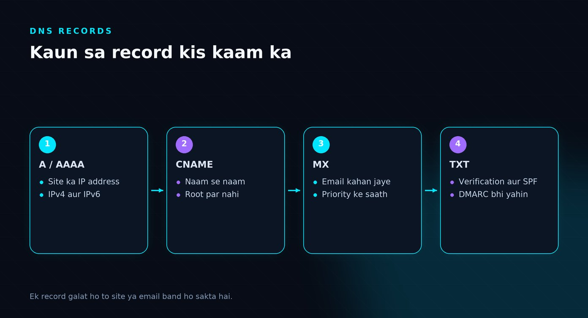
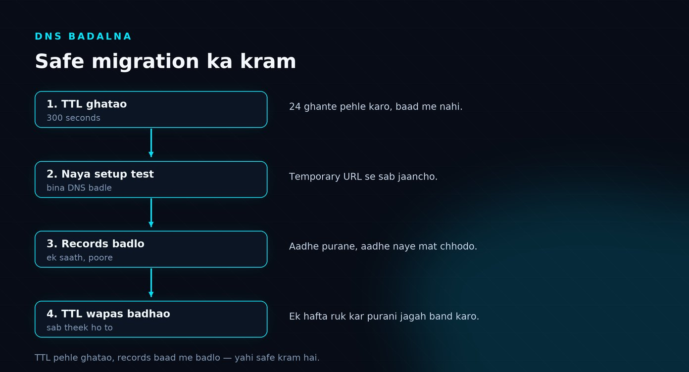

Domain aur DNS Records: A, CNAME, MX Samjhein
Domain खरीद लिया, hosting भी ले ली, files भी upload कर दीं — फिर भी site नहीं खुल रही। यह कहानी हर उस व्यक्ति के साथ होती है जो पहली बार site live करता है, और कारण लगभग हमेशा एक ही होता है: DNS records सही से नहीं जुड़े। Domain और server के बीच की वह कड़ी DNS है, और उस कड़ी में जो entries होती हैं, उन्हें records कहते हैं।
इस guide में मैं records को एक-एक करके खोलूँगा — A, AAAA, CNAME, MX, TXT, NS और CAA — और बताऊँगा कि कौन सा record कब लगता है, कौन सा कहाँ नहीं लग सकता, और क्यों। साथ में एक practical setup, TTL और propagation की सच्चाई, और वे गलतियाँ जो सबसे ज़्यादा देर करवाती हैं।
छोटा जवाब: DNS records बताते हैं कि आपके domain के साथ क्या होना चाहिए। A record domain को IP address से जोड़ता है, CNAME एक नाम को दूसरे नाम पर भेजता है, MX email कहाँ जाएगा यह तय करता है, और TXT में verification और spam-control की जानकारी रहती है। गलत record या गलत nameserver — site और email दोनों बंद कर सकते हैं।
Domain, registrar aur registry
Domain खरीदने का मतलब यह नहीं कि आपके पास कोई file है। आपको एक साल के लिए registration मिलती है, जो एक registry में दर्ज होती है — जैसे .com के लिए Verisign और .in के लिए NIXI. बीच में आपका registrar होता है, जो यह काम करवाता है और आपको control panel देता है।
उसी panel में दो चीज़ें होती हैं जो सबसे ज़्यादा मायने रखती हैं: nameservers और DNS records. Nameserver बताता है कि आपके records किस server पर रखे हैं। Records उस server पर रखे होते हैं। अगर आपने hosting की nameserver डाली है, तो records hosting panel में बनेंगे; अगर registrar की डिफ़ॉल्ट nameserver रखी है, तो records वहीं बनेंगे। दो जगह आधे-अधूरे records बनाना सबसे आम गलती है।
Records ka parichay

DNS records कई तरह के होते हैं, पर रोज़ के काम में पाँच-छह ही आते हैं। हर record में तीन चीज़ें होती हैं: name (किस नाम के लिए), type (कौन सा record), और value (जवाब क्या है)। चौथी चीज़ TTL है, जो बताती है कि इसे कितनी देर cache करना है।
| Record | काम | उदाहरण value |
|---|---|---|
| A | नाम → IPv4 address | 185.199.108.153 |
| AAAA | नाम → IPv6 address | 2606:50c0:8000::153 |
| CNAME | नाम → दूसरा नाम | example.com |
| MX | Email कहाँ जाए | 10 mail.example.com |
| TXT | Verification, SPF, DMARC | v=spf1 include:... |
| NS | Records किस server पर | ns1.hosting.com |
| CAA | कौन certificate दे सकता है | 0 issue "letsencrypt.org" |
A record: site ka pata
A record सबसे बुनियादी है — यह domain को एक IPv4 address से जोड़ता है। जब कोई example.com खोलता है, तो DNS यही record लौटाता है और browser उस IP पर connection बनाता है।
एक domain के कई A records हो सकते हैं, और तब DNS बारी-बारी से अलग-अलग IP लौटाता है। इसे round-robin कहते हैं। यह सस्ता load balancing है, पर यह नहीं जानता कि कौन सा server ज़्यादा load में है या बंद है — इसलिए असली load balancing के लिए अलग system चाहिए।
AAAA record वही काम IPv6 के लिए करता है। अगर आपकी hosting IPv6 support करती है, तो दोनों records डालें; जो user IPv6 पर आए, उसे तेज़ रास्ता मिलेगा।
एक practical बात — अगर आप static hosting (जैसे GitHub Pages या Netlify) पर हैं, तो उनकी documentation में दिए गए exact IPs इस्तेमाल करें। अपने laptop का IP या कोई अनुमानित IP डालने से site कभी नहीं खुलेगी, क्योंकि वह address आपके घर के router का है, server का नहीं।
CNAME: ek naam se doosre naam tak
CNAME कहता है "यह नाम उस नाम जैसा है"। जब कोई www.example.com खोलता है, तो DNS पहले CNAME पढ़ता है, फिर उसका A record ढूँढता है और अंत में IP लौटाता है। यानी दो कदम, पर फायदा यह है कि अगर server का IP बदले, तो सिर्फ़ एक जगह बदलना पड़ेगा।
CNAME का सबसे बड़ा फायदा यही है — hosting बदलने पर आपको IP याद नहीं रखना पड़ता। इसीलिए www के लिए CNAME आम है, और कई services (जैसे mail, CDN, verification) CNAME ही माँगती हैं।
पर एक सख्त नियम है: root domain पर CNAME नहीं लग सकता। example.com (बिना www) पर CNAME डालने से DNS standard टूट जाता है, क्योंकि उसी नाम पर MX और NS records भी होते हैं और CNAME के साथ कोई दूसरा record नहीं रह सकता। इसका हल है ALIAS या ANAME record, जो कुछ DNS providers देते हैं — काम वही करता है पर root पर सुरक्षित है। अगर आपका provider यह नहीं देता, तो root पर सीधे A records डालें।
MX: email ka rasta
MX record तय करता है कि आपके domain पर आने वाला email किस server पर जाए। इसमें एक priority number भी होता है — जो सबसे छोटा होता है, वह पहले try होता है; न मिले तो अगला।
example.com. MX 10 aspmx.l.google.com.
example.com. MX 20 alt1.aspmx.l.google.com.यहाँ एक बात ध्यान रखें: MX record IP नहीं, नाम माँगता है। अगर आप वहाँ IP डाल दें, तो email काम नहीं करेगा। और MX का नाम किसी ऐसे domain का होना चाहिए जिसका A record हो — वरना mail server मिलेगा ही नहीं।
अगर आपके पास कोई email service नहीं है और आप domain पर mail नहीं चाहते, तो भी एक "null MX" डालना अच्छा अभ्यास है — MX 0 . — जो साफ़ बताता है कि यहाँ mail नहीं लिया जाता। इससे spam दूसरे रास्ते नहीं ढूँढता।
TXT: verification aur spam control
TXT record में कोई भी text रखा जा सकता है, और इसीलिए यह सबसे ज़्यादा इस्तेमाल होने वाला record बन गया है। तीन काम इसके सबसे आम हैं।
1. Verification. Google Search Console, mail services और कई tools कहते हैं "यह TXT record डालो"। वे उसे पढ़कर पुष्टि करते हैं कि domain आपका है।
2. SPF. SPF बताता है कि कौन से servers आपके domain से email भेज सकते हैं। इसका format simple है — v=spf1 include:_spf.google.com ~all। एक domain पर सिर्फ़ एक SPF record होना चाहिए; दो होने पर दोनों बेकार हो जाते हैं।
3. DMARC. DMARC बताता है कि अगर SPF या DKIM fail हो तो क्या करना है — p=none सिर्फ़ report, p=quarantine spam में डालो, p=reject पूरी तरह रोक दो। इसे _dmarc.example.com पर TXT के रूप में डाला जाता है।
DKIM अलग record है — यह selector._domainkey.example.com जैसे नाम पर रहता है और email के signature जाँचने का public key रखता है। तीनों मिलकर तय करते हैं कि आपका email inbox में पहुँचे या spam में।
NS, CAA aur baaki
NS records बताते हैं कि आपके domain के records किस nameserver पर हैं। ये registrar पर सेट होते हैं और इन्हीं की वजह से बाकी records कहीं और रखे जा सकते हैं। CAA बताता है कि कौन सी CA आपके domain के लिए certificate बना सकती है — यह एक अतिरिक्त सुरक्षा परत है। SRV किसी service का host और port बताता है, जैसे video call या chat के लिए।
इनके अलावा PTR (reverse lookup), SOA (zone की जानकारी) और TLSA जैसे records भी हैं, पर सामान्य website के लिए उन्हें छेड़ने की ज़रूरत नहीं पड़ती।
NS records को छेड़ना सबसे संवेदनशील काम है, क्योंकि उन्हें बदलने से आपके सारे records किसी दूसरे server पर चले जाते हैं — यानी site, email और verification, तीनों एक साथ। इसलिए nameserver बदलने से पहले नई जगह पर सारे records बना लें, और पुराने records का export रखें। अगर nameserver बदलने के बाद email बंद हो जाए, तो सबसे पहले MX records जाँचें — अक्सर वे नई जगह पर बने ही नहीं होते।
Ek practical setup
मान लें आपकी site example.com पर है, hosting का IP 203.0.113.10 है, और email Google Workspace पर है। Records कुछ इस तरह दिखेंगे।
; site
A @ 203.0.113.10
CNAME www example.com.
; email
MX @ 10 aspmx.l.google.com.
MX @ 20 alt1.aspmx.l.google.com.
TXT @ "v=spf1 include:_spf.google.com ~all"
; verification (example)
TXT @ "google-site-verification=xxxxx"
TXT _dmarc "v=DMARC1; p=none; rua=mailto:dmarc@example.com"यहाँ @ का मतलब root domain है। ध्यान दें कि www पर CNAME है और root पर A. यही सबसे सुरक्षित ढाँचा है। अगर आप www को default रखना चाहते हैं, तो उल्टा भी कर सकते हैं, पर तब root पर redirect चाहिए।
TTL aur propagation ki sacchai
TTL (Time To Live) बताता है कि कोई record कितनी देर तक resolvers के cache में रहेगा। 3600 का मतलब एक घंटा, 300 का मतलब पाँच मिनट। जब आप record बदलते हैं, तो दुनिया भर के resolvers को तुरंत पता नहीं चलता — पुराना जवाब उनके cache में TTL खत्म होने तक रहता है।

इसीलिए migration से पहले TTL घटाना ज़रूरी है। अगर TTL 24 घंटे है और आपने record बदला, तो कुछ users को अगले दिन तक पुरानी site दिखेगी। TTL 300 करके 24 घंटे रुकें, फिर बदलाव करें — तब फैलाव मिनटों में होगा।
एक और बात — "propagation" कोई अलग process नहीं है। यह सिर्फ़ पुराने caches का खत्म होना है। अगर आपको तुरंत जाँचना है, तो किसी online DNS checker से अलग-अलग शहरों से lookup करें। और अपने ही laptop पर बार-बार test करने से पहले DNS cache साफ़ करें।
Aath common galtiyan
1. Root पर CNAME। Standard नहीं मानता; कुछ providers मना कर देंगे, कुछ चुपचाप तोड़ देंगे।
2. www और root में से एक छोड़ना। दोनों को सेट करें, एक को दूसरे पर redirect करें।
3. दो SPF records। दोनों अमान्य हो जाते हैं; सबको एक में मिलाएँ।
4. MX में IP डालना। MX नाम चाहता है, IP नहीं।
5. आधे records registrar पर, आधे hosting पर। Nameserver किसकी है, वहीं सब रखें।
6. Migration से पहले TTL न घटाना। इससे घंटों की देरी होती है।
7. डिलीट किए गए record को याद न रखना। Verification TXT और CAA अक्सर भुला दिए जाते हैं और बाद में email या certificate fail होता है।
8. मान लेना कि "कुछ देर में अपने आप ठीक हो जाएगा"। गलत record कभी ठीक नहीं होता; उसे बदलना पड़ता है।
Mera anubhav
पहली बार site live करते समय मैंने www के लिए CNAME डाला और root के लिए कुछ नहीं। नतीजा — www.example.com खुलता था, example.com नहीं। मुझे लगा कि DNS में time लगता है, और दो घंटे इंतज़ार करता रहा। बाद में पता चला कि record ही मौजूद नहीं था।
दूसरी बार email की समस्या आई — मेल जा रहा था पर inbox में नहीं पहुँच रहा। कारण SPF था: मैंने दो अलग records डाल दिए थे, एक hosting का और एक Google का। दोनों मिलकर अमान्य हो गए थे। एक record बनाकर दोनों को उसमें जोड़ा और समस्या खत्म हुई।
तीसरी सीख — हर record की एक वजह लिखकर रखें। मैंने एक छोटी table बनाई: कौन सा record, किस service के लिए, कब डाला। जब छह महीने बाद कुछ टूटा, तो उसी table से पता चल गया कि कहाँ देखना है। DNS में सबसे खतरनाक चीज़ अंधेरा है — जो record आपने खुद नहीं डाला और नहीं जानते किसका है।
नतीजा
DNS records आपके domain का नक्शा हैं। A और AAAA site का address देते हैं, CNAME एक नाम को दूसरे से जोड़ता है (root पर नहीं), MX email का रास्ता तय करता है, TXT verification और spam control करता है, और NS बताते हैं कि सब कहाँ रखा है। TTL समझकर बदलाव करें, और एक जगह पर सारे records रखें।
आगे पढ़ें: internet कैसे काम करता है — जहाँ DNS lookup का पूरा क्रम है, और web hosting — जहाँ बताया है कि यह सब किस server पर रखा जाता है।
अक्सर पूछे जाने वाले सवाल
DNS बदलाव में कितना समय लगता है?
TTL जितना सेट है, उतना। 300 सेकंड पर आम तौर पर 5–15 मिनट में फैल जाता है।
क्या एक domain पर कई A records हो सकते हैं?
हाँ, और DNS उन्हें बारी-बारी लौटाता है। इसे round-robin कहते हैं।
www और बिना www — कौन सा सही है?
दोनों चल सकते हैं; बस एक को दूसरे पर 301 redirect करें, ताकि duplicate page न बने।
SPF, DKIM और DMARC सब ज़रूरी हैं?
Email deliverability के लिए हाँ। SPF सबसे बुनियादी है, DMARC बताता है कि fail होने पर क्या करना है।
DNS बदलने से email बंद हो सकता है?
हाँ, अगर MX records गलती से हट जाएँ। इसलिए बदलाव से पहले सारे records का screenshot या export रखें।